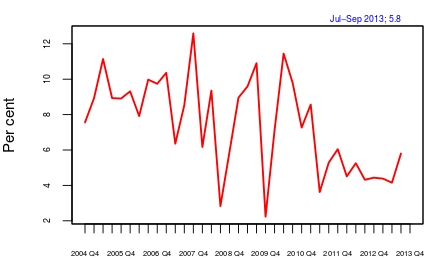
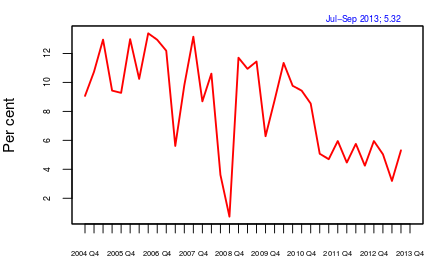
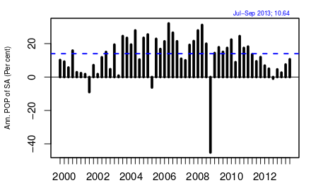
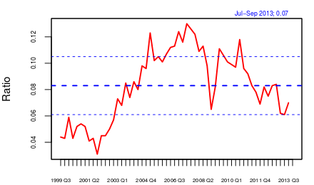
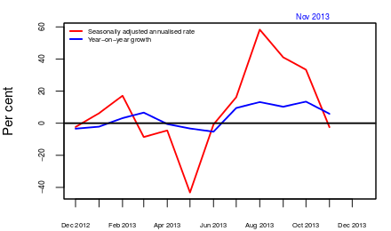

Looking like a recovery
Financial Express, 20th December 2013
There are a few signs of recovery in the Indian business cycle. These include an improvement in sales and profits of non-oil, non-financial companies and increase in the dollar value of exports. The growth in dollar value of exports has slowed down in the latest available data but now that the rupee is more competitive and the US economy is recovering, if firms have the needed business environment and infrastructure, we can see further improvements and a pick up in the business cycle.
One measure of business cycle conditions in India is to look at the quarterly GDP data. Figure 1 shows the seasonally-adjusted qoq growth of real GDP at factor cost. This data shows that the last quarter (July-September 2013) is showing an upturn.
Figure 1:
 However, this data includes agriculture and government spending. Agriculture has many fluctuations, but these are related to weather rather than business-cycle conditions. If an upturn in seen in agriculture then, while it does influence demand and therefore non-agricutural output, the direct effect of the monsoon on crops is not part of the cyclical upturn. If the government spends more, say because of a hike in government salaries due to the implementation of pay commission recommendations, GDP due to government services goes up. This component also can have an indirect effect on demand and cyclical conditions, but the additional spending by the government should not constitute a reason to believe that the cycle has turned. We, therefore, look at non-agricultural, non-government GDP (figure 2). This shows an upturn in the last quarter.
Figure 2:
 We then look at business cycle conditions by aggregating the performance of firms. Figure 3 shows aggregate sales of all non-oil, non-finance listed firms in India. The data showed qoq growth of seasonally-adjusted nominal sales. Oil companies are kept out as the administered price of diesel and kerosene will affect their nominal sales values. Finance is kept out as the definition of sales is not fully compatible with that of other services and goods. Since the figure is nominal its interpretation should be mindful of inflation. But if the WPI is not rising, then looking at these growth rates is meaningful. The figure shows that the growth rate of sales has now been rising for four quarters in a row. This is in contrast to the situation in the last two years when sales growth continued to decline quarter after quarter.
Figure 3:
 We next look at profit margins, or, the net profit (after tax) as a ratio of net sales of non-oil, non-finance listed firms
(figure 4). Conditions for investment are created only after firms see an increase in their profit margins. Here we see that in the last two quarters, profit margins have stopped declining. The data suggests that it is still too soon to say if profit margins have started recovering. We should wait and watch what happens to margins for at least two more quarters before drawing such a conclusion.
Figure 4:
 What might have driven these improvements in the firm indicators? While investment indicators have stopped worsening, they are still to show a steady improvement that would be enough to push up sales. Many project clearances have been given, but most of those do not appear to have translated into action on the ground yet. It seems that a serious driver of the improvement is the improvement in exports. Figure 5 shows yoy and the three-month centered moving average of annualised month-on-month change in seasonally-adjusted merchandise exports measured in dollars. This showed a sharp increase and then a sudden slump in export growth.
Figure 5:
 Looking forward, can we expect the recovery to continue? The latest US jobs data is further indicating an improvement in business cycle conditions in the US. In the period before the financial crisis, Indian business cycles were highly correlated with global ones. After the crisis, it was felt that the two had decoupled as India continued to grow when the world was slowing down. The same happened with many other emerging economies. However, lately, we have come to understand that the fiscal and monetary stimulus that was able to keep growth from falling in emerging economies has now lost most of its impact. Now that these economies have slowed down and large deficits and inflation have started hurting these economies, the question of decoupling is being revisited. So if the US economy recovers and Indian exports do well, we may expect to see the upturn continuing.
However, there are three caveats. First, infrastructure such as power can pose a constraint to further growth. While textile and leather exports have picked up they could, at some point, hit constraints posed by power availability and port capacity. This suggests that if exports growth has to continue then infrastructure issues would need to be solved. In the immediate future, there may be space capacity and we might see a sudden pick up in exports, but it may become difficult to sustain these unless those constraints are addressed.
Second, if the real exchange rate appreciates, Indian exports could lose competitiveness. This could happen because of an appreciation of the rupee or an increase in the inflation rate. Indeed, very roughly, if the inflation differential between India and the US is 8%, then an annual depreciation of the rupee of about 8% would keep the real exchange rate between the rupee and the dollar where it is today.
Third, finance may pose a constraint as many companies, especially infrastructure companies have damaged balance sheets. Banks have rising NPAs and until the financial health of companies and banks improves, fast recovery will be difficult.
In summary, we are seeing small signs of an improvement in business cycle conditions in India. Looking ahead at the next quarter, these are likely to continue. At the same time, if some of the projects that have obtained clearances start operations, there may be further signs of a cyclical upturn.
Back up to Ila Patnaik's media page
Back up to Ila Patnaik's home page